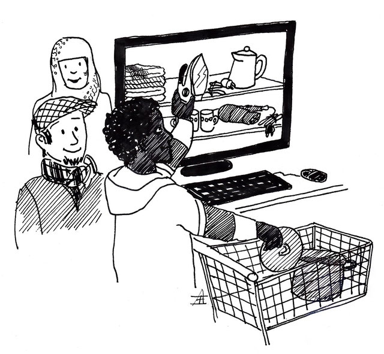

Virtuelles Warenhaus - Sachen clever spenden
Du möchtest helfen und Flüchtlinge mit Sachspenden unterstützen?
Das ist sehr schön! Genau deswegen haben wir dieses „virtuelle Warenhaus“ eingerichtet.
Ein wichtiger Unterschied zu einem „echten Warenhaus“ ist, dass deine angebotene Sachspende erstmal nur als Fotografie mit Kurzbeschreibung im virtuellen Warenhaus „abgelegt“ wird.
Warum ein virtuelles Warenhaus?

Auf der einen Seite ist der Freundeskreis sehr dankbar über Sachspenden, auf der anderen Seite gibt es aber nicht immer sofort einen Abnehmer. Hinzu kommt, dass der nötige Lagerraum fehlt und die Koordination eine Menge Zeit verbraucht.
Zwei Freundeskreisler haben sich also Gedanken gemacht wie Spenden die Geflüchteten erst dann erreichen, wenn sie die Spenden wirklich benötigen. Das Ganze ohne hohen Koordinierungsaufwand und ohne Notwendigkeit eines Lagers. Die ausgetüftelte Antwort lautet „Virtuelles Warenhaus“.
Die Spende wird dabei lediglich als Foto mit kurzer Beschreibung in einer Datenbank abgelegt. Alle Ehrenamtlichen können die gespendeten Gegenstände einsehen und erst wenn es Bedarf bei den Flüchtlingen gibt, kommt es zur Abholung oder Lieferung der Sachspende. So sammelt sich mit der Zeit eine große Datenbank mit Sachen an, die den geflüchteten Menschen bei Bedarf zur Verfügung gestellt werden können.
Was passt ins virtuelle Warenhaus?
- Möbel - alles was man für eine Ausstattung einer Wohnung braucht
- Elektrogeräte - von Wasserkocher über Lampe, Fernseher hin zu Computer
- Spielsachen - für Groß und Klein
- Fahrräder - besser direkt über die Rad-Werkstatt : Rad-Werkstatt@freundeleuwi.org
- Gartenmöbel
- Musikinstrumente
Kleidung bitte NICHT über das virtuelle Warenhaus
sondern z.B. über Spendenbasare oder die Kleiderkammer vom Roten
Kreuz.
Genauere Informationen gibt es über die Webseite des Roten Kreuzes Winnenden .
Geschäftsstelle:
Mühltorstraße 50, 71364 Winnenden
Telefon:
(07195) 65068
— Montag 9:00–11:00 Uhr (außerhalb Schulferien)
E-Mail:
info@drk-winnenden.de
Bevor es losgehen kann, bitte hier noch die Details-Informationen lesen...
Über die Jahre haben wir uns viel Erfahrung erarbeitet und versuchen den Ablauf - so gut es eben geht - zu optimieren. Daher ist es sehr wichtig und hilfreich, wenn die folgenden Punkte beachtet werden.
Dazu einfach hier auf diese blaue Schrift klicken
Vielen Dank für deine Mithilfe!
Bitte habe Verständnis, falls nicht alles ganz schnell und reibungslos klappt.
Wir alle arbeiten hier im Ehrenamt und oft sollte man an vielen Stellen gleichzeitig sein.
Aber wir versuchen – mit all unseren Schwächen und Unzulänglichkeiten – so gut es geht zu helfen.
Wer mitmachen möchte, ist herzlich willkommen.
*Datenschutz: Deine Adresse wird nicht im Internet öffentlich sichtbar sein. Wir benötigen die Adresse aber zur Kontaktaufnahme. Daher wird die Adresse auch im Computer gespeichert. Mit der Angabe deiner Adresse stimmst du dieser Vorgehensweise zu.